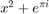
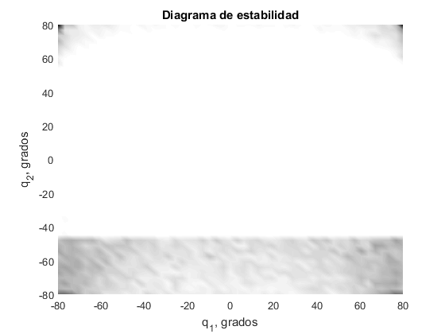

%La imagen es la de la página 126 %Damos valores genéricos para la estructura R = 5; h = 5; q1_min = deg2rad(-80); q1_max = deg2rad(80);

q2_min = deg2rad(-80); q2_max = deg2rad(80); N = 100; %Número de puntos muestreados por coordenada inc = (q1_max-q1_min)/50; %Tamaño de la celda sigma = inc/10; %Desviación típica de la muestra vec_q1 = q1_min:inc:q1_max; vec_q2 = q2_min:inc:q2_max; n1 = length(vec_q1); %Longitud de matriz en x/q1 n2= length(vec_q2); %Longitud de matriz en y/q2 matrizBondad = zeros(n1,n2); for i = 1:n1 q1 = vec_q1(i); for j = 1:n2 q2 = vec_q2(j); resultadosBuenos = 0; %Para contabilizar más adelante [dA, dB, dC] = calculaDistancias(R,h,q1,q2); %Calculamos distancias %En ese punto q1,q2 vec_q1_ = q1+sigma*randn(1,N); %Vector de qs en torno a q1 vec_q2_ = q2+sigma*randn(1,N); %Vector de qs en torno a q2 vec_q1_ = max(vec_q1_, q1_min); %Contenemos las coordenadas dentro vec_q2_ = max(vec_q2_, q2_min); %del rango articular vec_q1_ = min(vec_q1_, q1_max); vec_q2_ = min(vec_q2_, q2_max); for k = 1:N [dA_, dB_, dC_] = calculaDistancias(R,h,vec_q1_(k), vec_q2_(k)); %Criterio de bloqueo cablesMasLargos = 0; if dA_>dA cablesMasLargos = cablesMasLargos + 1; end if dB_>dB cablesMasLargos = cablesMasLargos + 1; end if dC_>dC cablesMasLargos = cablesMasLargos + 1; end if(cablesMasLargos >= 1) %Con que haya un cable %que deba ser más largo, no es una %conf. alcanzable resultadosBuenos = resultadosBuenos + 1; end %matriz_longitudes_muestreo(:,i) = [dA_, dB_, dC_]'; end %Ahora que tenemos calculadas las N longitudes, vemos cuántas son %válidas matrizBondad(i,j) = resultadosBuenos/N; end end close all; figure(1); [X,Y] = meshgrid(rad2deg(vec_q1), rad2deg(vec_q2)); surface(X,Y,matrizBondad); colormap gray shading interp title('Diagrama de estabilidad'); xlabel('q_{1}, grados'); ylabel('q_{2}, grados'); disp('La media de la matriz es'); mean(mean(matrizBondad)) mean(mean(matrizBondad(2:end-1,2:end-1))) disp('Así que esto quiere decir que restringimos, aprox, la mitad del C-Space(~2gdl/2)');
La media de la matriz es
ans =
0.9609
ans =
0.9667
Así que esto quiere decir que restringimos, aprox, la mitad del C-Space(~2gdl/2)
